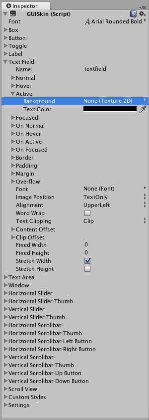

GUI Skin (IMGUI System)
GUISkins are a collection of GUIStyles that can be applied to your GUI. Each Control type has its own Style definition. Skins are intended to allow you to apply style to an entire UI, instead of a single Control by itself.

To create a GUISkin, select Assets->Create->GUI Skin from the menubar.
Please Note: This page refers to part of the IMGUI system, which is a scripting-only UI system. Unity has a full GameObject-based UI system which you may prefer to use. It allows you to design and edit user interface elements as visible objects in the scene view. See the UI System Manual for more information.
Properties
All of the properties within a GUI Skin are an individual GUIStyle. Please read the GUIStyle page for more information about how to use Styles.
| Property: | Function: |
|---|---|
| Font | The global Font to use for every Control in the GUI |
| Box | The Style to use for all Boxes |
| Button | The Style to use for all Buttons |
| Toggle | The Style to use for all Toggles |
| Label | The Style to use for all Labels |
| Text Field | The Style to use for all Text Fields |
| Text Area | The Style to use for all Text Areas |
| Window | The Style to use for all Windows |
| Horizontal Slider | The Style to use for all Horizontal Slider bars |
| Horizontal Slider Thumb | The Style to use for all Horizontal Slider Thumb Buttons |
| Vertical Slider | The Style to use for all Vertical Slider bars |
| Vertical Slider Thumb | The Style to use for all Vertical Slider Thumb Buttons |
| Horizontal Scrollbar | The Style to use for all Horizontal Scrollbars |
| Horizontal Scrollbar Thumb | The Style to use for all Horizontal Scrollbar Thumb Buttons |
| Horizontal Scrollbar Left Button | The Style to use for all Horizontal Scrollbar scroll Left Buttons |
| Horizontal Scrollbar Right Button | The Style to use for all Horizontal Scrollbar scroll Right Buttons |
| Vertical Scrollbar | The Style to use for all Vertical Scrollbars |
| Vertical Scrollbar Thumb | The Style to use for all Vertical Scrollbar Thumb Buttons |
| Vertical Scrollbar Up Button | The Style to use for all Vertical Scrollbar scroll Up Buttons |
| Vertical Scrollbar Down Button | The Style to use for all Vertical Scrollbar scroll Down Buttons |
| Custom 1-20 | Additional custom Styles that can be applied to any Control |
| Custom Styles | An array of additional custom Styles that can be applied to any Control |
| Settings | Additional Settings for the entire GUI |
| Double Click Selects Word | If enabled, double-clicking a word will select it |
| Triple Click Selects Line | If enabled, triple-clicking a word will select the entire line |
| Cursor Color | Color of the keyboard cursor |
| Cursor Flash Speed | The speed at which the text cursor will flash when editing any Text Control |
| Selection Color | Color of the selected area of Text |
Details
When you are creating an entire GUI for your game, you will likely need to do a lot of customization for every different Control type. In many different game genres, like real-time strategy or role-playing, there is a need for practically every single Control type.
Because each individual Control uses a particular Style, it does not make sense to create a dozen-plus individual Styles and assign them all manually. GUI Skins take care of this problem for you. By creating a GUI Skin, you have a pre-defined collection of Styles for every individual Control. You then apply the Skin with a single line of code, which eliminates the need to manually specify the Style of each individual Control.
Creating GUISkins
GUISkins are asset files. To create a GUI Skin, select Assets->Create->GUI Skin from the menubar. This will put a new GUISkin in your Project View.

Editing GUISkins
After you have created a GUISkin, you can edit all of the Styles it contains in the Inspector. For example, the Text Field Style will be applied to all Text Field Controls.

No matter how many Text Fields you create in your script, they will all use this Style. Of course, you have control over changing the styles of one Text Field over the other if you wish. We'll discuss how that is done next.
Applying GUISkins
To apply a GUISkin to your GUI, you must use a simple script to read and apply the Skin to your Controls.
// Create a public variable where we can assign the GUISkin
var customSkin : GUISkin;
// Apply the Skin in our OnGUI() function
function OnGUI () {
GUI.skin = customSkin;
// Now create any Controls you like, and they will be displayed with the custom Skin
GUILayout.Button ("I am a re-Skinned Button");
// You can change or remove the skin for some Controls but not others
GUI.skin = null;
// Any Controls created here will use the default Skin and not the custom Skin
GUILayout.Button ("This Button uses the default UnityGUI Skin");
}
In some cases you want to have two of the same Control with different Styles. For this, it does not make sense to create a new Skin and re-assign it. Instead, you use one of the Custom Styles in the skin. Provide a Name for the custom Style, and you can use that name as the last argument of the individual Control.
// One of the custom Styles in this Skin has the name "MyCustomControl"
var customSkin : GUISkin;
function OnGUI () {
GUI.skin = customSkin;
// We provide the name of the Style we want to use as the last argument of the Control function
GUILayout.Button ("I am a custom styled Button", "MyCustomControl");
// We can also ignore the Custom Style, and use the Skin's default Button Style
GUILayout.Button ("I am the Skin's Button Style");
}
For more information about working with GUIStyles, please read the GUIStyle page. For more information about using UnityGUI, please read the GUI Scripting Guide.